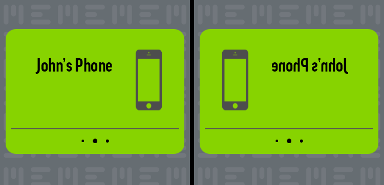
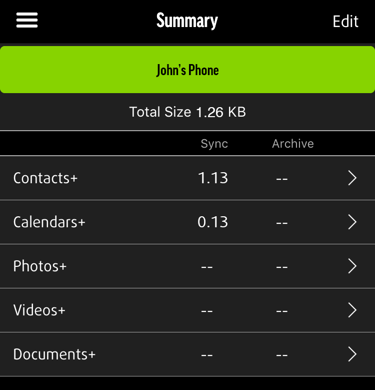

MON MEEM FAIT-IL BIEN UNE SAUVEGARDE ?

Dès que vous avez entré votre code PIN, MEEM commence à sauvegarder le contenu de votre téléphone. Pendant la sauvegarde, votre téléphone reste entièrement utilisable, même si l'application MEEM fonctionne en arrière-plan. L'application va passer par plusieurs phases durant le processus de sauvegarde et chacune d'entre elles sera affichée en haut de l'écran :
- Confirmation des données : MEEM confirme la quantité totale de données sur votre appareil et vérifie s'il existe de nouvelles données ou si vous en avez supprimé. Au début, vous verrez s'afficher Confirmation des données en haut de l'écran (A), puis un compteur (B). Il indique la catégorie en cours de vérification et si les données se trouvent sur le téléphone ou sur MEEM. Par exemple, lorsqu'il indique Contacts dans le téléphone ### / #### (B), il vérifie les photos de votre téléphone pour savoir ce qu'il y a éventuellement à sauvegarder. Lorsqu'il indique Contacts dans MEEM ### / #### (C), il vérifie les photos sur le câble MEEM et y copie tout nouvel élément ou supprime les photos que vous avez supprimées de votre câble MEEM. Ceci se produit pour toutes les catégories et vous permet de suivre la progression de la sauvegarde.

- Finalisation : MEEM termine la sauvegarde et mettra bientôt fin au processus.
- Une fois la sauvegarde terminée, Accueil s'affichera à l'écran.
Pour voir les données sauvegardées, touchez l'icône Menu puis l'icône Vos données. Dans la section Vos données, vous pouvez toucher chaque catégorie et voir le contenu qui y est sauvegardé. La sauvegarde MEEM s'effectue pas à pas, ce qui signifie que si vous débranchez votre câble MEEM pendant la sauvegarde, celui-ci reprendra depuis là où il s'est arrêté. Après la première sauvegarde, le câble MEEM ne transférera vers lui que les données nouvelles ou modifiées, ce qui rend les sauvegardes suivantes bien plus rapides.
